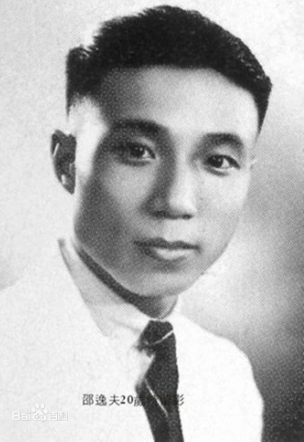

school profile

Ningbo City Vocational and technical college was founded in 2003. Its predecessor is the College of Vocational and technical education of Ningbo University. It is a full-time ordinary higher vocational college for training high-quality technical and skilled applied talents for modern service industry.
In 1992, Mr. Shao Yifu donated money to build the former Ningbo Normal University "Yifu higher vocational and technical education center", which is one of the earliest institutions to carry out full-time higher vocational and technical education in Zhejiang Province. In 1996, the former Ningbo University, the former Ningbo Normal University and the former Ningbo Branch of Zhejiang Fisheries University merged to form a new Ningbo University and set up the College of Vocational and technical education of Ningbo University.